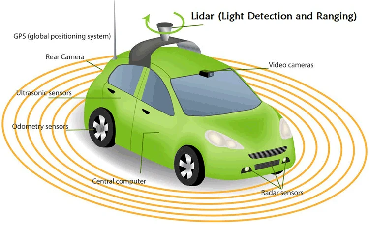
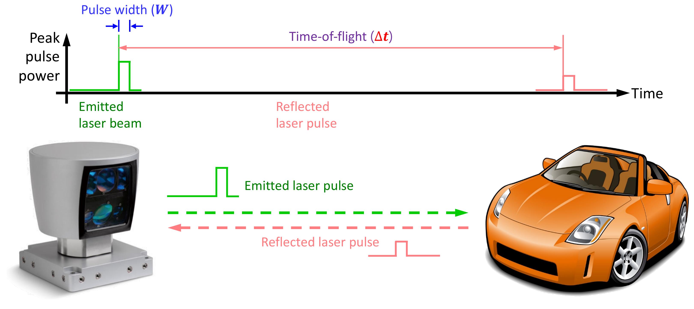
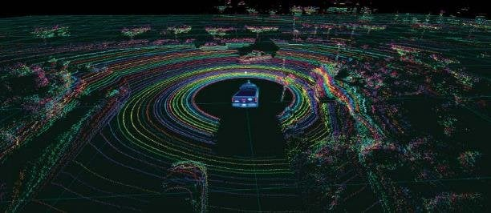
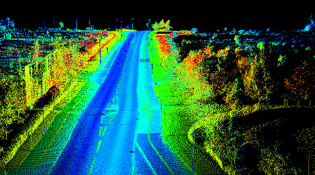
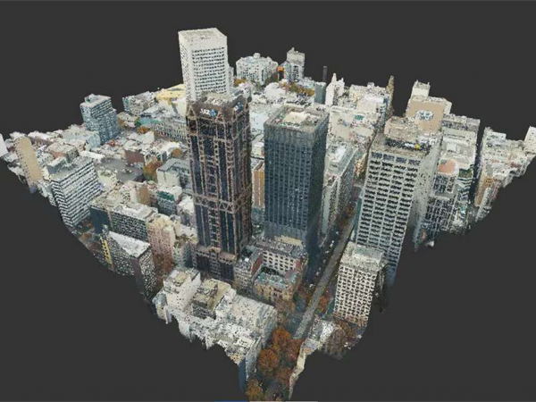
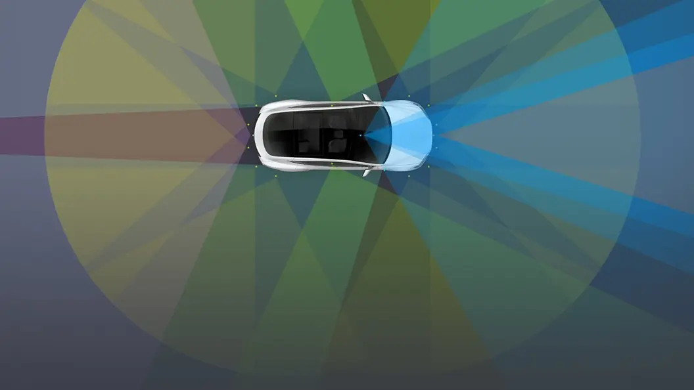
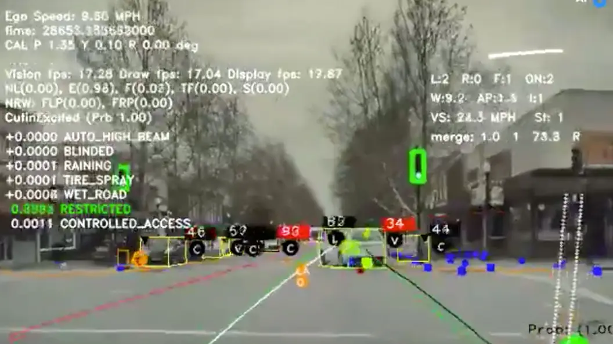

The Basic Idea
There are two well-known approaches:
- LiDAR-based perception
- Camera-based perception, which Tesla often refers to as Tesla Vision
How LiDAR Works
LiDAR stands for Light Detection And Ranging. It measures distance by sending out laser pulses and timing how long they take to return.


Step by Step
- The LiDAR unit emits thousands or millions of laser pulses per second.
- Those pulses hit nearby objects such as cars, curbs, walls, cyclists, or pedestrians.
- The sensor measures the return time for each pulse.
- The system calculates distance from that timing.
The division by 2 is needed because the light travels out to the object and then back to the sensor.
What LiDAR Produces
The output is often called a 3D point cloud. This is a dense set of points showing the shape and position of objects in space.



Strengths
- Very accurate distance measurement
- Works well in low light or at night
- Provides direct 3D geometry
Weaknesses
- Historically expensive
- Can be bulky, though solid-state units are improving this
- Can struggle in heavy rain, fog, or snow
- Detects shape and position, but does not automatically understand object meaning
In simple terms, LiDAR is very good at telling the car something is here and exactly how far away it is.
Tesla’s Alternative: Camera-Based Vision
Tesla’s modern approach is primarily based on cameras and neural networks rather than LiDAR. The general idea is that if humans drive using eyes and a brain, then a machine should be able to do something similar using cameras and software.
Typical Hardware Idea
Tesla vehicles use multiple cameras positioned around the car to build a near 360-degree view of the environment.



The Challenge
Cameras do not directly measure distance in the same way LiDAR does. So Tesla has to infer depth rather than measure it directly.
How Tesla Estimates Distance
- Multi-view geometry — different cameras see the same object from different angles.
- Motion parallax — as the car moves, the apparent movement of objects helps estimate depth.
- Neural networks — machine-learning models estimate depth, lane markings, road edges, vehicles, signs, and obstacles from image sequences.
This means Tesla is trying to reconstruct a 3D understanding of the road scene from ordinary video rather than measuring every object with lasers.
What Each System Builds Internally
Although the sensing methods are different, both systems are trying to build an internal model of the world.
LiDAR Pipeline
Tesla Vision Pipeline
Tesla’s software is often described as building an occupancy network or a learned 3D scene representation.
Main Philosophical Difference
| LiDAR Approach | Tesla Vision Approach |
|---|---|
| Sensors create a 3D map more directly | Software infers 3D structure from images |
| More hardware-heavy | More software-heavy |
| Depth measurement is easier and more explicit | Depth estimation is harder and more dependent on AI |
| Higher sensor cost | Lower hardware cost |
Why Tesla Avoids LiDAR
- Cost — cameras are much cheaper than high-end LiDAR units.
- Scalability — lower-cost hardware is easier to deploy across millions of vehicles.
- Human analogy — people drive mainly with visual input.
- Data advantage — Tesla can gather huge volumes of real-world driving video to train its models.
Why Many Other Companies Still Use LiDAR
Many autonomous-vehicle companies prefer to combine sensors rather than rely on one type alone. This is often called sensor fusion.
The reasoning is straightforward: if one sensor struggles, another may compensate.
The Core Debate
LiDAR View
Camera-only systems are taking on a harder perception problem because cameras do not directly measure depth.
Tesla View
Given enough data, training, and computing power, vision systems should be able to understand the road scene well enough without LiDAR.
A Simple Analogy
LiDAR approach: like throwing tiny ping-pong balls everywhere and measuring how quickly they bounce back, so you can map the room directly.
Tesla vision approach: like using only your eyes and experience to judge depth, shape, and motion.
The LiDAR method is easier from a geometry point of view. The vision method is cheaper in hardware but much harder in software.
Summary Comparison
| Feature | LiDAR | Tesla Vision |
|---|---|---|
| Distance measurement | Direct | Estimated |
| Main sensing method | Laser scanning | Cameras |
| Hardware cost | Higher | Lower |
| Software difficulty | Lower | Higher |
| 3D understanding | More direct | Inferred from visual data |
| Typical industry use | Common in robotaxi and AV stacks | Used prominently by Tesla |
Final Thought
LiDAR and Tesla Vision are not simply two different pieces of hardware. They reflect two very different engineering beliefs.
LiDAR says: measure the world directly.
Tesla Vision says: learn to interpret the world from images.
Both are trying to solve the same problem, but one leans more on sensors and the other leans more on software.